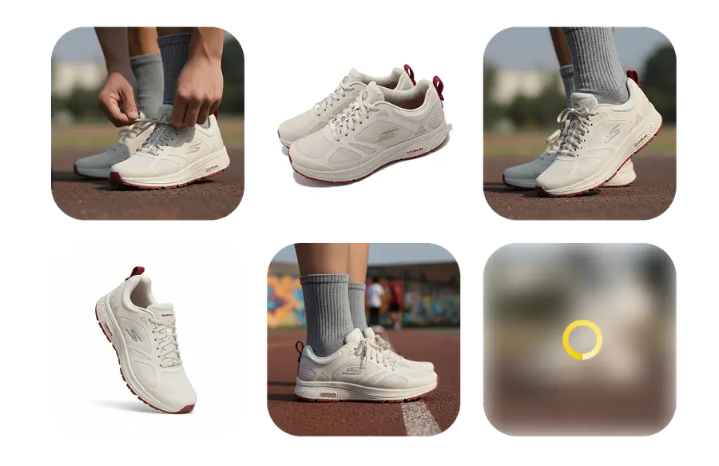
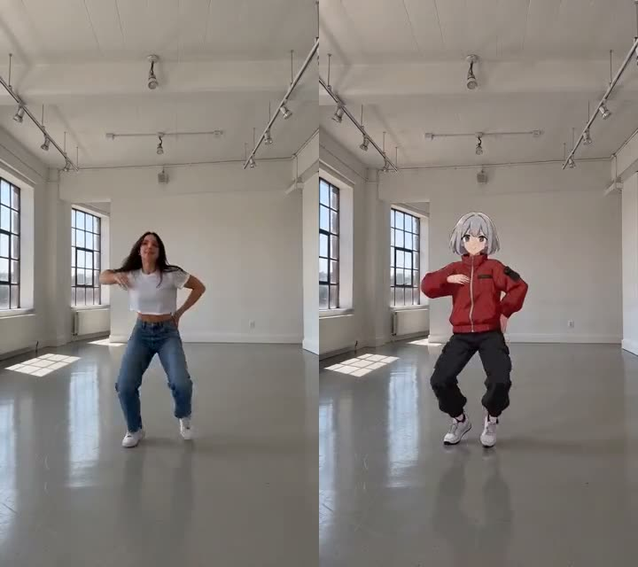

RoboNeo 对比评测：当 AI 图像工具堆成山，它凭什么让我留下来
2025 年 AI 图像生成赛道已经拥挤到一屏装不下所有工具名。RoboNeo 没有押注单一能力，而是把抠图、产品摄影、视频迁移、Agent 自动化塞进同一条订阅线。我用了三个月，说说它在同类里的位置。
先给结论：同类里它排在什么位置
AI 图像工具的格局到 2025 年已经很清晰了：一端是功能单一但极致的——专门抠图、专门去背景、专门做头像；另一端是"全家桶"——大厂把十几个模型打包，月费贵到肉疼。RoboNeo官网 卡在中间，定位很明确：给中小商家和内容创作者一条低成本的"够用的一站式"路线。
这条路线不好走。两端都有人做得更好——极致抠图有人比它干净，极致视频生成有人比它惊艳。但如果你是一个同时需要产品白底图、几张场景变体、偶尔做条短视频广告的电商卖家，你不想分别订阅三四个服务、记三四个积分账户、付三笔月费——这时候 RoboNeo 的价值就出来了。
我试用过市面上七八款同类工具，有的抠图确实比它准，有的视频质量确实比它稳，但最后留下的账号只有 RoboNeo。原因很简单：它覆盖了我日常 80% 的需求，总花费是竞品单一服务的一半。下面说它做得特别好的三件事，以及它没做好的地方。
它的差异化：三个别家没有的设计
积分模型是真的"通用"
大部分工具的积分是专款专用的——抠图积分不能用来做视频，产品摄影积分不能用来生成贴纸，甚至同一个产品的不同模型还分开计费。RoboNeo 的积分池是真正打通的：10 个积分可以换一张抠图、也可以换一张产品场景图、也可以加进 Genjutsu 动作迁移的最低消耗里。
这件事听起来简单，做起来不容易。我见过太多工具为了拉高 ARPU 故意拆分积分体系，让你在一个功能上花不完的点数烂在账户里。RoboNeo 这种设计的直接效果是：我花 30 块订阅的月额度，有时候能用 10 天，有时候能用 20 天，完全看我本月是抠图多还是做视频多，没有冗余浪费。
Agent 自动化把"组合工作流"的门槛砍到了地板
抠图 + 换景 + 生成变体，这是电商卖家的日常。传统做法是三张工具卡切来切去，每张都要上传下载一次。从RoboNeo下载拿到入口注册后就能用，RoboNeo 的电商营销 Agent 把这套流程打包成了一句话：你告诉它"这是个保温杯，我要五个场景和一条短视频"，它自己调调用什么模型、用什么参数、按什么顺序跑。

我对比过同类工具的 Agent 能力——要么只覆盖单一环节（比如自动抠图），要么需要你自己写 prompt 链路。RoboNeo 的做法是：把高频组合工作流预编排好，用户用自然语言说需求就行。这对不会写 prompt、不想学工作流编排的小团队太友好了。当然代价是灵活性不如自建链路，但对 90% 的卖家来说，灵活到能自己编排工作流这件事本身就是不必要的。
Genjutsu 动作迁移的思路比执行更聪明
Genjutsu AI 是 RoboNeo 在视频生成上的差异化产品。它不做从零生成视频那种难事——它只做一件事：保留参考视频的动作节奏和镜头，把里面的人换成新角色。

这个思路聪明在哪？普通视频生成是让 AI 同时编动作、编场景、编角色、编光线，四件事一起瞎蒙，结果往往是手脚变形、背景穿帮、角色不一致。动作迁移把 AI 的工作量砍到只剩"角色重建"一件事，动作和节奏都是真实拍摄的，自然稳定得多。
效果上它当然不如专门的视频生成模型精致，但胜在稳定、胜在便宜、胜在不需要反复调 prompt。我给公司吉祥物做了三条舞蹈视频，都是一次过，总共花了不到 250 积分——换成别家，可能一条就要这个价。
它的取舍：为这些优势付出了什么
抠图边缘质量不是顶尖
头发丝、透明玻璃、逆光照片——这些复杂边缘场景，RoboNeo 的抠图效果确实不如专门做抠图的工具精细。白色头发在浅色背景前经常出光晕，玻璃制品容易抠出半透明的边缘残留。好消息是 RoboNeo文档 里给了非常务实的五个技巧，从拍摄条件到预设模式的替换方案都有，大部分场景下能绕过去。但如果你做的是高端时尚行业，模特头发的每一根都要干净——这时候你可能还是得用更专业的方案。
平台属性决定了它的上限
RoboNeo 的每个工具都"够用"但不"极致"。产品摄影的场景变体，能出但不如专门做产品 3D 渲染的工具真实；Genjutsu 的角色一致性够用但远不如 Runway、Kling 这类专门视频模型。这不是它的问题——订阅价格摆在那里，要在同价位覆盖这么多功能，每个模块的深度就必然有天花板。
积分消耗在视频场景下上涨很快
抠图 10 积分一张是真便宜，但 Genjutsu 的 Seedance 2.5 模型起步就要 200 积分。如果你本月视频需求多，一个月的订阅额度可能只够跑 10 条。好在它有个隐藏福利：首次购买任何套餐后，第一条 Genjutsu 视频免费——包括一次性 Video Pack，不需要订阅。这对想先试效果再决定要不要加大投入的用户是个好信号。
选购结论
选 RoboNeo 的情况：你是电商卖家、自媒体、小团队运营，日常需要图片和少量视频素材，但不想分散在三四个平台上管理账户和预算。你接受每个功能"够用就行"，不追求单功能的顶尖表现。你的预算有限，希望花一份订阅费覆盖尽量多的场景。
不选 RoboNeo 的情况：你是专业设计师或摄影师，抠图边缘质量有严格要求；你是内容工作室，需要大量高精度视频生成；你是程序员或资深玩家，喜欢自建工作流、调试 prompt 链路。
如果你属于前者，去 RoboNeo 官网注册一个月试试——它的入门门槛真的不高，而且积分用不完也不会作废。用一个月你就能直观感受到："这条订阅线省了我多少跨平台切换的时间和钱"，这就是它留下来的理由。
最后一句推荐
RoboNeo 不是每一项都最出色，但它是目前我用过的覆盖范围最合理、积分体系最透明、对中小团队最友好的 AI 图像工具组合。当你不想在工具选型上花太多时间、只想快速干活的时候，它值得占一个长期位置。